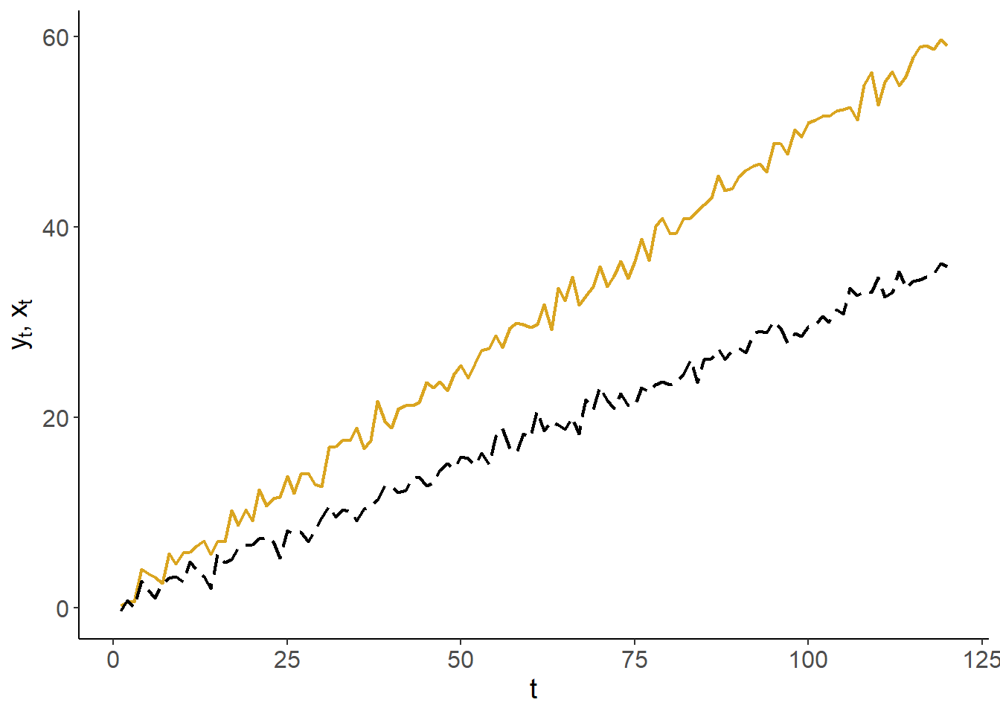
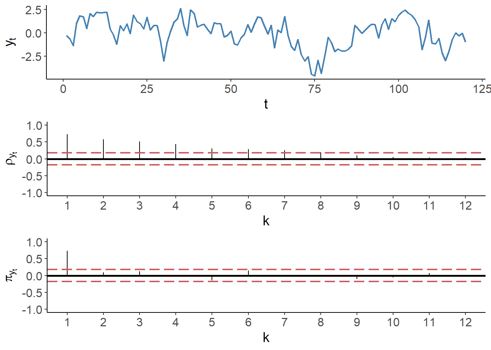
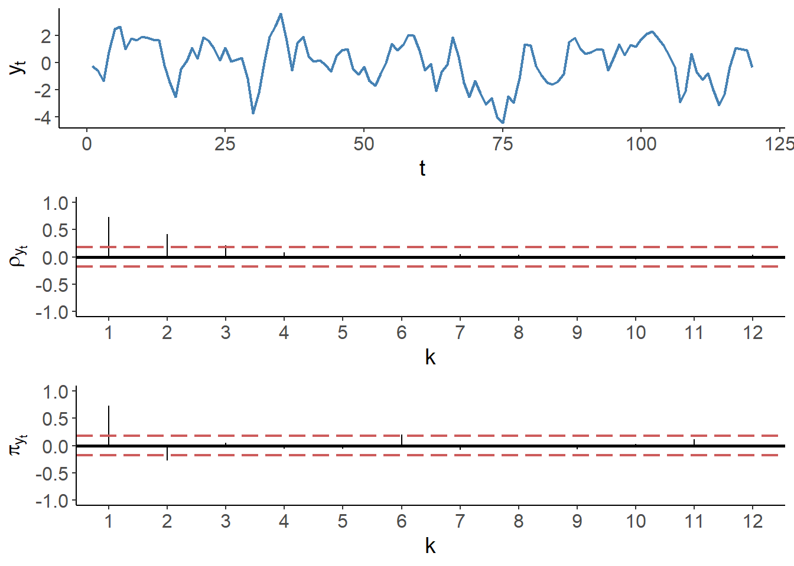
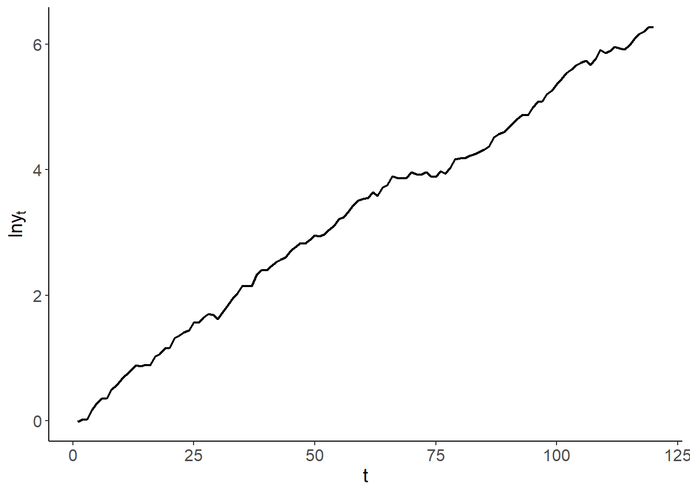
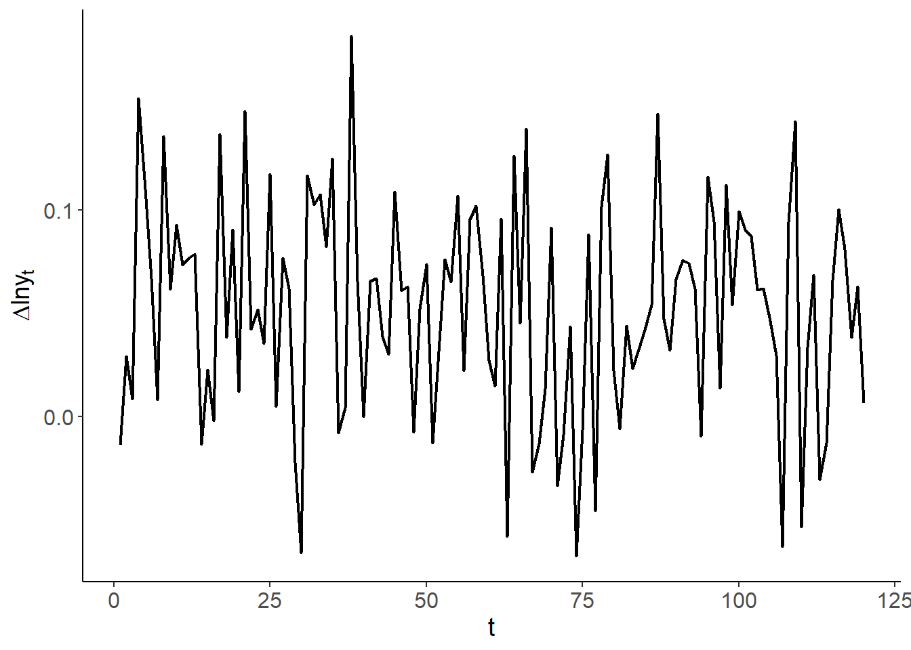

Chapter 2 Time Series
Time series are realizations of a chronologically stored sequence of random variables. This sequence of random variables is referred to as the stochastic process. Thus, a time series is a realisation of the stochastic process. We index time periods as \(1,2,\ldots,T\), and denote the set of observations as \(\{y_1,\ldots,y_T\}\). One can view a time series as a finite sample from an underlying doubly–infinite sequence: \(\{\ldots,y_{-1},y_{0},y_1,y_2,\ldots,y_T,y_{T+1},y_{T+2},\ldots\}\).
If all random variables, from where the time series are drawn, have the same distribution, then we refert to such time series as stationary. Stationarity is an important feature, and the assumption, on which the time series analysis heavily relies.
Before diving any further into the concepts and methods of time series econometrics, consider the simplest kind of time series comprised of realisations from independent and indentically distributed random variable with zero mean and constant variance: \(\varepsilon_t \sim iid\left(0,\sigma^2\right)\). The following graph plots this time series against time.

Such time series are referred to as white noise. That is, a time series, \(y\), is a white noise process if: \[\begin{align*} & E(y_t) = 0,\;~\forall~t\\ & Var(y_t) = \sigma^2,\;~\forall~t\\ & Cov(y_t,y_{t-k}) = 0,\;~\forall~k \ne 0 \end{align*}\]
Because each observation is drawn from the same distribution, white noise is a stationary time series. Indeed, it is a special type of stationary time series insofar as it has time-invariant mean, variance, and covariance. For a stationary time series, the mean doesn’t need to be equal to zero (as long as it is constant over time), nor covariances need to be equal to zero (as long as they are constant over time, though they may vary with \(k\)). Thus, \(\{y_t\}\) is stationary if the mean and variance are independent of \(t\), and the autocovariances are independent of \(t\) for all \(k\).
In fact, it is more of a norm rather than an exception for a time series to be correlated over time. Indeed, because of the sequential nature of time series, we commonly observe dependence among the temporally adjacent time series. That is, for most economic time series, we would expect that \(y_t\) and \(y_{t-1}\) to be correlated. Such correlations, therefore, are referred to as autocorrelations, and are given by: \[Corr(y_t,y_{t-k}) = \frac{Cov(y_t,y_{t-k})}{Var(y_t)},\;~~k=1,2,\ldots\] These correlations are commonly illustrated via the so-called autocorrelogram, which plots the sequence of autocorrelation coefficients against the lags at which these coefficients are obtained. For example, an autocorrelogram of the previously illustrated white noise process is as follows:

For each \(k\), the vertical line extending from zero represents the autocorrelation coefficient at that lag. The red dashed lines denote the 90% confidence interval, given by \(\pm 1.96/\sqrt{T}\), where \(T\) is the length of the time series.
It is common to transform time series by taking logarithms, differences, or differences of logarithms (growth rates). Such transformations usually are done to work with the suitable variable for the desired econometric analysis. For example, if an economic time series is characterized by an apparent exponential growth (e.g., real GDP), by taking natural logarithms the time series ``flatten’’ and the fluctuations become proportionate. The difference operator ise denoted by \(\Delta\), so that \(\Delta y_t = y_t-y_{t-1}\). The following three graphs illustrate (i) a time series with an apparent exponential growth, (ii) the natural logarithm of this time series, and (iii) their differences (i.e., the log-differences of the original series).
